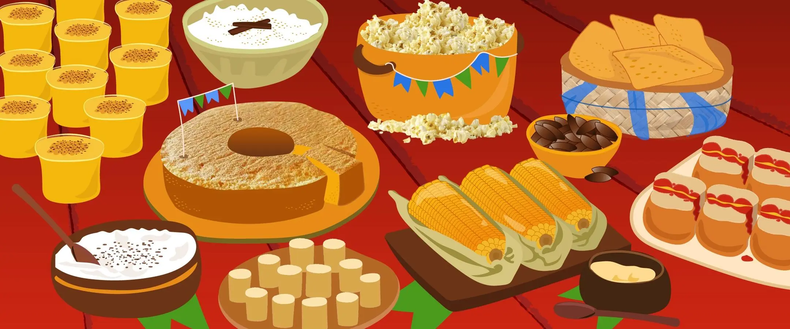
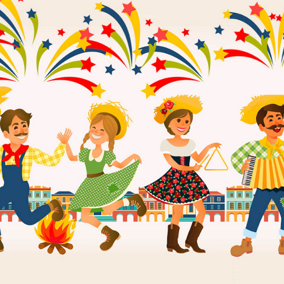

🌾 As origens no campo
A Festa Junina tem suas raízes nas tradições rurais do Brasil, especialmente ligadas à vida no campo e à agricultura. Originalmente, essas festas celebravam o período das colheitas, principalmente o milho, que é a base de muitos pratos típicos. Era um momento de agradecer pela fartura da terra, pedir boas colheitas e reunir a comunidade em torno da fé, da música e da comida.
As comemorações incluem elementos como a quadrilha 💃🕺 (uma dança em grupo que representa um casamento na roça), as fogueiras 🔥, que simbolizam proteção e tradição, e comidas típicas como pamonha, canjica, bolo de milho e pé de moleque. Tudo isso é decorado com bandeirinhas coloridas e roupas caipiras que lembram o estilo de vida rural.

🏙️ A festa chega à cidade
Com o tempo, a Festa Junina ultrapassou os limites do interior e chegou com força às cidades. Em centros urbanos de todo o Brasil, escolas, igrejas, clubes e comunidades realizam suas próprias festas juninas, adaptando os costumes do campo ao ambiente urbano. É uma forma de manter vivas as tradições culturais, mesmo fora do seu contexto original.
Nas cidades, a festa também é uma oportunidade de reunir as pessoas, valorizar a cultura popular e celebrar as raízes do povo brasileiro. Muitas vezes, há concursos de melhor traje caipira, barraquinhas com jogos e comidas típicas, e apresentações de quadrilhas organizadas por alunos e moradores. A essência da festa continua presente: união, alegria e identidade nacional. 🎉🌽

🤝 União que fortalece
A Festa Junina é uma das maiores expressões culturais do Brasil, porque consegue unir diferentes realidades: o campo e a cidade, o passado e o presente, a tradição e a modernidade. Em um mesmo ambiente, vemos a mistura de costumes, sotaques, sabores e ritmos vindos de várias regiões do país.
Essa festa é mais do que uma simples comemoração. Ela representa um elo entre gerações, entre o rural e o urbano, mostrando que é possível preservar o que é tradicional mesmo vivendo em uma sociedade moderna. Celebrar o São João é também celebrar o Brasil profundo, com todas as suas cores, músicas e histórias. 💛
🎥 Assista ao vídeo sobre a Festa Junina
Confira este vídeo para entender melhor as tradições e os principais elementos da Festa Junina!
História da Festa Junina - Você sabe como surgiu a Festa Junina no Brasil?
🌻 Mais imagens da Festa Junina
Veja mais sobre o clima festivo e alegre das festas juninas no Brasil:
 